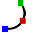

Ændring af geometrien
I appen TecZone Bukning har man en kraftfuld 2D-skitseeditor til at ændre, rydde op i eller tilføje til geometrien. Brug genvejstasten S til at komme i skitsetilstand. Editoren viser delen i udfoldningsvisning.

I udviklet visning, klik på Rengøring ikonet  eller tryk på genvejstasten S.
eller tryk på genvejstasten S.
En menu åbnes med forskellige ikoner til behandling af udfoldelsen:

Skitsepanel
| Ikon | Symbol | Betydning |
|---|---|---|
|
Vælg |
Vælg objekter, linjer, indgange etc. |
|
Linje |
Skitsér en linje |
|
Forbundne linjer |
Skitserer et vilkårligt antal linjer |
|
Parallel |
Skitserer en parallel til en linje |
|
Normal |
Skitserer en tangent til en kurve |
|
Bukkekant |
Skitserer en normal linje til en linje |
|
Centrumcirkelbue |
Skitsér en bukkekant |
|
2-punkt-cirkelbue |
Skitserer en cirkelbue fra et midterpunkt, startpunkt og slutpunkt |
 |
3-punkt-cirkelbue |
Skitserer en cirkelbue gennem to definerede punkter (start- og slutpunkt) |
|
Tangential cirkelbue |
Skitserer en cirkelbue, der er tangentiel til skitseelementerne |
|
Rektangel |
Skitserer et rektangel |
|
Centrum-rektangel |
Skitserer et rektangel fra midten |
|
Cirkel |
Skitserer en cirkel. Vælg cirklens midtpunkt, og træk markøren for at definere radius eller indtast en værdi for radius |
|
Omkreds med 2 punkter |
Skitserer en cirkel svarende til omkredsen. Vælg et punkt på omkredsen, derefter et andet punkt og et tredje punkt. |
|
Omkreds med 3 punkter |
Skitserer en cirkel svarende til omkredsen. Vælg et punkt på omkredsen, derefter et andet punkt og et tredje punkt. |
|
Cirkel med 2 tangenter |
Skitserer en cirkel med to tangenter. Indtast cirkeldiameteren, vælg derefter den første tangent og derefter den anden tangent. |
|
Cirkel med 3 tangenter |
Skitserer en cirkel med tre tangenter. Indtast cirkeldiameteren, og vælg derefter første tangent, så den anden tangent og så den tredje tangent. |
|
Polygon centrum - hjørnepunkt |
Skitserer en cirkel med tre tangenter. Indtast cirkeldiameteren, og vælg derefter første tangent, så den anden tangent og så den tredje tangent. |
|
Polygon centrum - midte sidekant |
Skitserer en polygon. Angiv antal sider og vælg et midterpunkt og midten af en sidekant |
|
Polygon med sidekant |
Skitserer en polygon. Angiv antal sider og definér startpunktet og slutpunktet på en side. |
|
Afrunding |
Runder hjørnet i hjørnepunktet af to skitseelementer med en indtastet radius, hvorved der skabes en tangentiel cirkelbue |
|
Fase |
Opretter en facet på hjørnet af skæringspunktet mellem to skitseelementer |
|
Hjørnetrimning rund |
Beskærer hjørnet ved skæringspunktet mellem to skitseelementer med en indtastet radius |
|
Hjørnetrimning kantet |
Beskærer hjørnet ved skæringspunktet mellem to skitseelementer med et rektangel. Størrelsen af rektanglet kan indtastes på forhånd. |
|
Frit snit kvadratisk |
Opretter et rektangulært, frit snit. Der skal indtastes en hjørneværdi, fri skæredybde og derefter vælges et hjørne. |
|
Frit snit langhul |
Skaber et aflangt, hulformet frisnit. Der skal indtastes hjørneafstand, fri skærebredde, fri skæredybde og derefter vælges et hjørne. |
|
Frit snit trekantet |
Opretter en trekantet friskæring. Der skal indtastes hjørneafstand, fri skærebredde, fri skæredybde og derefter vælges et hjørne. |
|
Nøglehul |
Opretter et nøglehul i en cirkel med de indtastede værdier. |
|
Komplet afrunding 3 segmenter |
Runder tre tilsluttede skitseelementer |
|
Forlæng element |
Vælg det skitseelement, der skal udvides |
|
Trim element |
Vælg det skitseelement, der skal beskæres |
|
Sammensmelt |
Bruges til at beskære og samle flere separate polylinjer i én |
|
Offset elementer |
Forskyd et eller flere skitseelementer, skitserede modelkanter eller modelflader med en specificeret afstand |
|
Forskyd |
Vælg et skitseelement med ctrl vælg et referencepunkt, og flyt skitseelementet |
|
Drej |
Vælg et skitseelement med ctrl, vælg et drejningsmidtpunkt, derefter et startpunkt og et slutpunkt for at dreje skitseelementet |
|
Skalér |
Vælg et skitseelement med ctrl, vælg et basispunkt, derefter et startreferencepunkt og et slutreferencepunkt til at skalere skitseelementet |
|
Spejl |
Vælg et skitseelement med ctrl, derefter starten af spejllinjen og derefter enden af spejllinjen for at spejle skitseelementet |
|
Lineært mønster |
Brug lineære mønstre til at oprette flere referentierede kopier af en eller flere skitseelementer, som kan placeres i lige store afstande langs en eller to lineære stier. Klik på det lineære mønster og indtast de ønskede værdier |
|
Cirkelmønster |
Brug cirkulære mønstre til at oprette flere referentierede kopier af en eller flere skitser elementer, som kan placeres i lige store afstande omkring en akse. Klik på cirkulære mønstre og indtast de ønskede værdier |
|
Kombinér flader |
Vælg to eller flere lukkede, skitserede elementer for at kombinere overflader med hinanden |
|
Snitflade |
Vælg to eller flere lukkede, skitseelementer for at generere et skæreområde af valgte elementer |
|
Trim flade |
Vælg to eller flere lukkede skitseelementer for at beskære overfladen |
|
Kopiér frit snit |
Der kan laves flere kopier af en kærv langs en kant ved brug af dette værktøj. Først indtastes afstanden mellem kopierne og antallet af kopier af den kærv, der ønskes lavet. Vælg derefter kærven ved at klikke på de to linjesegmenter, der støder op til kærven |
|
Slet frit snit |
En kærv kan slettes ved et hjørne eller langs et linjesegment ved brug af dette værktøj. Klik på de to-linjede segmenter, der støder op til kærven, og kærven fjernes |
|
Spejl frit snit |
En kærv kan spejles ved et hjørne eller langs et linjesegment ved brug af dette værktøj. Klik på de to-linjede segmenter, der støder op til kærven, og kærven spejles |
|
Kurvetræk |
For at starte en ny spline, klik på startpunktet, og når der klikkes på efterfølgende punkter, vil splinen blive oprettet. Hvis splinen skal lukkes, tryk på tasten ALT og klik derefter |
|
Profil |
Indtast bundlængde, flangehøjde, tykkelse, flangevinkel, indre radius og tryk på enter for at oprette en profil |
|
Tekst |
Bruges til at tegne tekst, der vil blive markeret på den del af lasermaskinen. Når der klikkes på denne værktøjsknap, viser indtastningsfeltet indtastningsfelter for teksten, størrelsen og drejningsvinklen |
|
Tekst |
Bruges til at tage formerne af tegn i enhver TrueType-skrifttype og konvertere dem til polylinjer. Laserklargøring kan derefter anvendes på disse polylinjer, og de kan skæres. Første gang der klikkes på denne knap, vises dialogen Skrifttype, som giver mulighed for at vælge den skrifttype, der skal bruges til teksten. |
|
Standardforme |
Bruges til at oprette flere almindelige former og indsætte dem i tegningen. Når der klikkes på denne knap, vises dialogen Opret form, så der kan vælges fra paletten af almindelige former, der er angivet. |
|
Enkel måleangivelse |
Vælg det første dimensioneringspunkt, derefter det andet dimensioneringspunkt, og positionér dimensioneringslinjen |
|
Referencemåleangivelse |
Vælg det første dimensioneringspunkt, derefter det andet dimensioneringspunkt, og positionér dimensioneringslinjen |
|
Målekæde |
Vælg det første dimensioneringspunkt, derefter det andet dimensioneringspunkt, positionér dimensioneringslinjen og vælg næste dimensioneringspunkt |
|
Horisontalt ordinatmål |
Ordinatdimensioner er et sæt dimensioner, der måles fra ordinaten nul i tegningen. Vælg et referencepunkt og positionér dimensioneringen |
|
Vertikalt ordinatmål |
Ordinatdimensioner er et sæt dimensioner, der måles fra ordinaten nul i tegningen. Vælg et referencepunkt og positionér dimensioneringen |
|
Vinkel måleangivelse |
Opretter en dimensionering for en vinkel. Vælg den første linje og derefter den anden linje hvorpå vinklen ønskes dimensioneret |
|
Radius måleangivelse |
Opretter en dimensionering for en radius. Vælg den cirkel, hvorpå radius skal dimensioneres. Dimensionér diameteren med ctrl |
|
Radius måleangivelse med gennemgående henvisningslinje |
Opretter en dimensionering med kontinuerlig leder for en radius. Vælg den cirkel, hvorpå radius skal dimensioneres. Dimensionér diameteren med ctrl |
|
Påskrift |
Brug til at tilføje noter til tegningen i form af billedforklaringer. For at oprette en billedforklaring, indtast den tekst, der skal vises, klik for at angive, hvor pilen skal pege, og klik igen for at angive, hvor teksten skal placeres. |
|
Segment måleangivelse |
Bruges til at tilføje dimensionering for lige linjer og buede segmenter. Klik på segmentet, der skal dimensioneres, og klik igen for at positionere dimensionen. Eller hold og klik på et segment for at positionere dimensionen automatisk. |